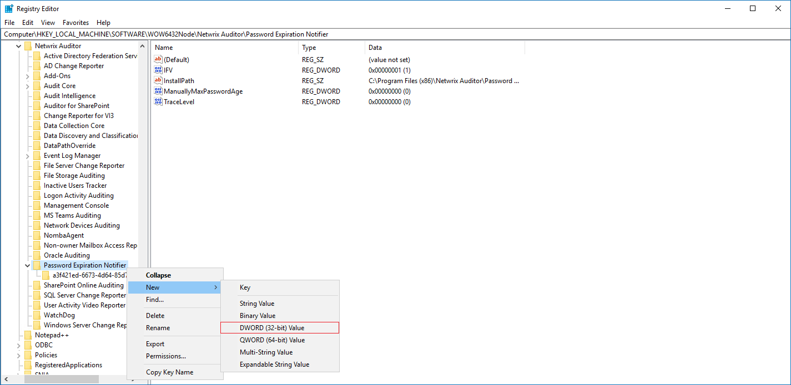
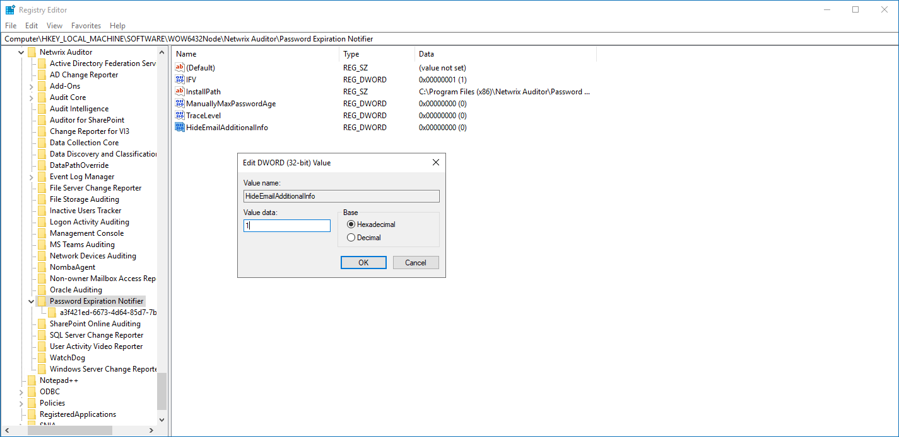

Scenario
You'd like to remove the Netwrix header and footer from emails sent to users and managers. By default, Password Expiration Notifier emails include a branded header and footer. Users may get confused by the branding, or think the email sent by a third party is a phishing attempt.
Resolution
IMPORTANT: In some cases both header and footer reset after your Netwrix Auditor instance had been upgraded to v10.6. For additional information, refer to the following article: Password Expiration Notifier Email Header and Footer Reset After Upgrade.
-
Open Registry Editor in the Netwrix Auditor Server host.
-
Navigate to
HKEY_LOCAL_MACHINE\SOFTWARE\WOW6432Node\Netwrix Auditor\Password Expiration Notifier. -
Right-click the Password Expiration Notifier hive and click New.
-
Select DWORD (32-bit) Value.
 -
Name the key HideEmailAdditionalInfo.
-
Right-click the key and select Modify.
-
Set the value data to 1 Hexadecimal.
 -
The next round of emails will be sent without the header and footer.
NOTE: If you'd like to re-enable the header and footer, simply change the value data to
0.
To further customize the Password Expiration Notifier emails, refer to the following article: Customize Notifications and Reports in Password Expiration Notifier.